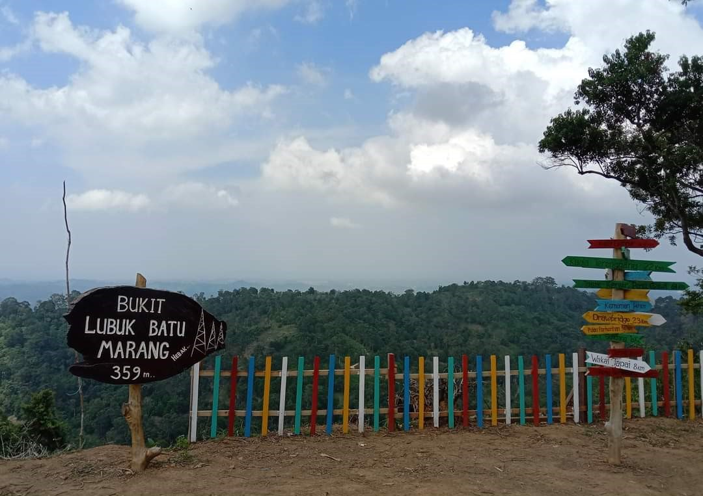
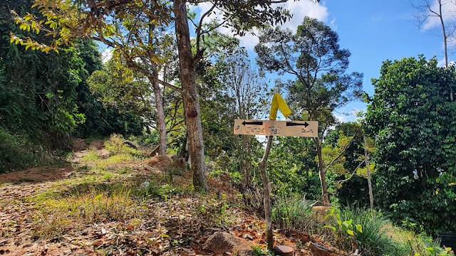
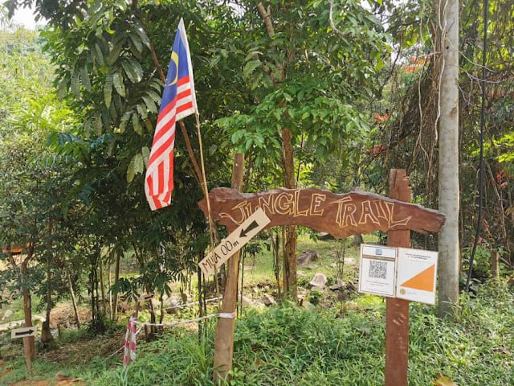

Home
About
Culture
Boat Building
Weaving Craft
Kitefly
Handicraft
Attractions
Pulau Kapas
Marang River Cruise
Bukit Lubuk Batu
Foods
Fishing Industry
Traditional Fishing Methods
Modern Development
Commonly Caught Fish Species
Accomodation
Contact Us
ATTRACTIONS PLACES IN MARANG, TERENGGANU
BUKIT LUBUK BATU
1 / 4

2 / 4

3 / 4

4 / 4
❮
❯